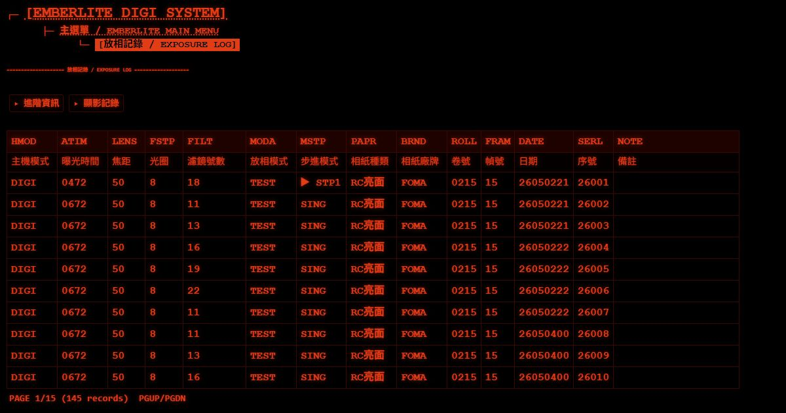
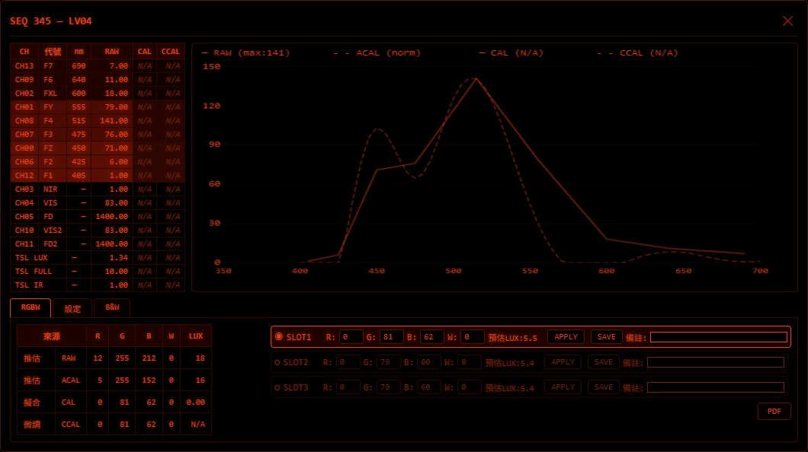
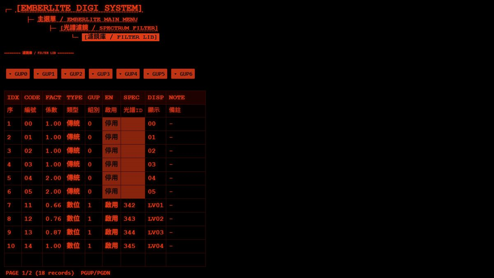

Product 02 · Photography / Darkroom
EMBERLITE
Exposure control for the darkroom
EMBERLITE brings enlarger exposure control, print records and timed processing stages together in a physical darkroom system.
01 / Print records
Keep the conditions
behind each print
Printing records can include exposure time, lens, aperture, filter, paper type and brand. Review previous settings in the Web Console when comparing results or returning to an earlier session.
{kind=link}

02 / Spectral data
Explore the light
behind the exposure
With an external sensor and suitable digital lighting, EMBERLITE supports spectral sampling, baseline calibration, RGBW fitting and measurement-based correction. These tools help configure digital exposures; results depend on the connected equipment and calibration data.
{kind=link}

03 / Filter library
Connect filters
with exposure settings
View filter factors, conventional and digital entries, enabled states and spectral links together. Exposure compensation and filter factors are used to calculate the exposure time for the selected settings.
{kind=link}

From exposure
to processing
Set the exposure
Use the mode selector, rotary encoder and buttons to set the time, filter and printing conditions. Start exposure with the physical main button.
Work through test strips
Exposure compensation, filter factors and successive test-strip steps support different exposure conditions. The operator starts each exposure in turn.
Continue into processing
When enabled, chemical timing follows a completed exposure through development, stop bath, fixing and washing. Each stage waits for the operator to start it; audible cues and a skip control support the sequence.
Review the session
Look up print records through the local Web Console and export them as CSV. Handling the print and carrying out the chemical process remain manual tasks.
Equipment and connections
- Core operation
- Exposure and processing timing run on the host, with physical controls.
- Local network
- The Web Console provides browser access to records and configuration over local Wi-Fi.
- Digital lighting
- Spectral sampling and RGBW calibration require an external sensor and suitable lighting.
Let's talk
Tell us about your darkroom.
Share your enlarger setup and printing workflow to discuss EMBERLITE.